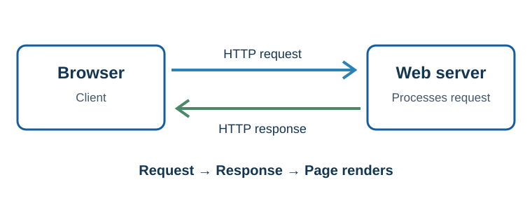

HTTP basics
Learn about requests, responses, methods, status codes, and where HTTP fits in the web stack.
Read HTTP BasicsIT 3203 · Web Development Project
How the Web’s main communication protocol developed from simple text pages to HTTP/3.
HTTP stands for HyperText Transfer Protocol. It defines how browsers, apps, and servers exchange requests and responses. This website explains what HTTP does and how its versions have changed to support the modern Web.
Start learningLearn about requests, responses, methods, status codes, and where HTTP fits in the web stack.
Read HTTP BasicsCompare HTTP/0.9, HTTP/1.0, HTTP/1.1, HTTP/2, and HTTP/3.
Explore the versionsReview important ideas such as caching, TLS, QUIC, and multiplexing.
Study key conceptsThe basic pattern has remained consistent: a client sends a request, and a server sends a response. Newer versions mainly improve how messages travel across the network.

| Page | Topic | What it covers |
|---|---|---|
| 1 | Home | Overview and page directory |
| 2 | HTTP Basics | Requests, responses, methods, and status codes |
| 3 | Evolution | How HTTP versions changed over time |
| 4 | Key Concepts | Seven important terms and ideas |
| 5 | References | Research sources and learning resources |
| 6 | About | Student and project information |